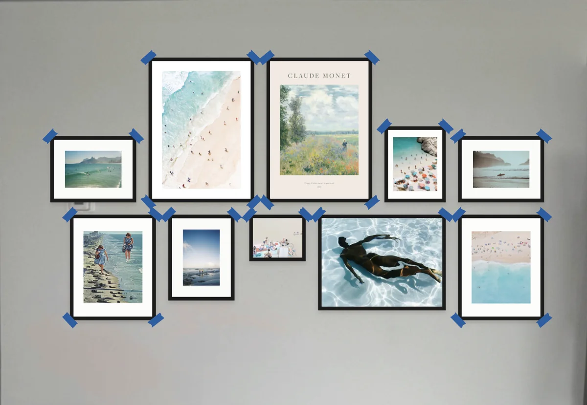

Walldrobe
A wardrobe for your walls
I bought a print in 2022 that I love. It has hung in three apartments and never looked right. My wall in New York took two years to get right, and almost every mistake was size and spacing, not taste.
You photograph one wall and mark the art you already own. It gives you finished walls drawn on your own photo, with real prints in real frame sizes, the price, and where every nail goes.
It's for people in their late twenties to late thirties who just moved, or just moved in with someone. They own a few pieces they've rehung in every apartment, and they don't know what size to buy, how high to hang it or how far apart. Today they rehang the same prints, or try Pinterest, a tape measure and painter's tape, or buy a matching gallery set that ignores what they already own.
It started as a class venture called Walls on Rotation, after 15 neighbors in my New York building messaged me when I offered prints to borrow. The long-term model is Rent the Runway, for art: the frames stay up and the prints swap.
Try Walldrobe on your own wall